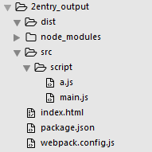
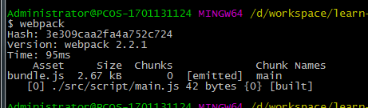
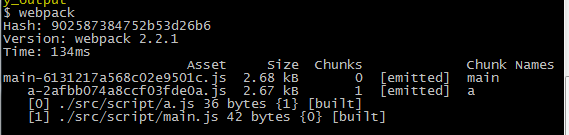
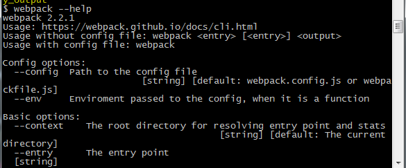
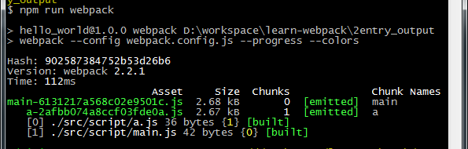

初始化项目并安装webpack到依赖项
在根目录新建webpack.config.js文件，通过配置webpack.config.js，执行webpack进行打包。
按照下面目录结构，创建目录及文件

webpack.config.js
module.exports = {
entry : './src/script/main.js',
output : {
path : './dist/js/',
filename : 'bundle.js'
}
}
执行webpack，在./dist/js/输出了bundle.js

webpack.config.js
module.exports = {
entry : {
main : './src/script/main.js',
a : './src/script/a.js'
},
output : {
path : './dist/js/',
filename : '[name]-[chunkhash].js'
}
}
执行webpack，在./dist/js/输出了 chunkname+chunkhash 的文件

在终端中执行webpack --help可以看到webpack的参数及作用

我们可以看到webpack --config命令是指定配置文件，默认为webpack.config.js。
如果我们想指定参数又不想每次都在终端输入繁琐参数命令，比如指定配置文件、打包进度--progress、打包信息不同字体颜色 --colors等。
可以在package.json 中scripts中配置我们的命令。
pageage.json
{
"name": "hello_world",
"version": "1.0.0",
"description": "",
"main": "index.js",
"scripts": {
"test": "echo \"Error: no test specified\" && exit 1",
"webpack":"webpack --config webpack.config.js --progress --colors"
},
"author": "",
"license": "ISC",
"devDependencies": {
"webpack": "^2.2.1"
}
}
执行npm run webpack，可以进行打包
